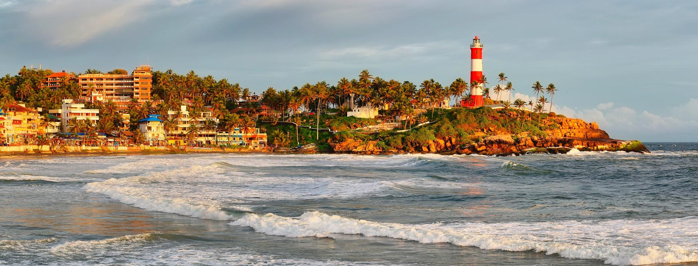

Kovalam first received attention when the Regent Maharani Sethu Lakshmi Bayi of Travancore constructed her beach resort, Halcyon Castle, here towards the end of the 1920s. Thereafter the place was brought to the public eye by her nephew the Maharaja of Travancore. The European guests of the then Travancore kingdom discovered the potential of Kovalam beach as a tourist destination in the 1930s. In the early 1970s many hippies came on their way to Ceylon in the Hippie Trail, beginning the transformation of a casual fishing village of Kerala into a significant tourist destination.